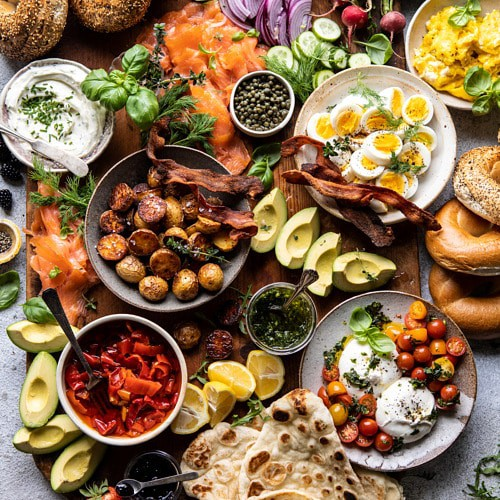

Menu
Breakfast Favorites
-
Crispy Chicken Benedict
Homemade biscuit, golden fried all natural chicken breast, poached eggs, Hollandaise, green chile sauce and citrus marinated onions. Choice of one breakfast side
$12.99
-
Chicken and Pancakes
Golden fried all natural chicken breast and cinnamon beignet pancakes drizzled with sweet and spicy Maple Buffalo sauce and powdered sugar
$11.99
-
Migas
A Tex-Mex classic. Scrambled eggs with pico de gallo and tortilla chips, topped with choice of homemade sauce and melted cheddarjack cheese. Served with black beans and Mexican rice. Tortillas available upon request
$9.29
-
Eggs Francisco
Toasted English muffin topped with scrambled eggs, sliced tomato, Pederson's all natural bacon, avocado slices and queso. Choice of two breakfast sides
$10.79
-
Chilaquiles
Crispy corn tortilla chips sautéed in verde sauce topped with two over easy eggs, queso fresco, onions, cilantro and sour cream. Served with refried black beans and Mexican rice
$9.99
Breakfast Basics
-
American Classic
Choice of Pederson's all natural bacon, sausage, or ham steak and two eggs any style. Choice of two breakfast sides
$9.29
-
Southern Classic
Two homemade biscuits topped with bacon peppered gravy, two eggs any style and two Pederson's all natural sausage patties
$9.49
-
Breakfast Tacos
Flour, corn or whole wheat tortillas filled with three ingredients; eggs, all natural bacon or sausage, veggie or pork chorizo, cheddarjack cheese, tofu scramble, or seasoned home fries. Served with salsa
$3.99
-
Kerbey Scramble
Combination of our seasoned home fries, sliced mushrooms, diced tomato and green onions scrambled with eggs. Topped with melted cheddarjack cheese. Choice of two breakfast sides
$9.29
-
Oatmeal Combo
A warm bowl of oatmeal sprinkled with cinnamon. Served with raisins, brown sugar, toast and seasonal fresh fruit
$7.99
Pancakes and French Toast
-
French Toast
Slices of Texas Toast dipped in our seasoned egg mix and cooked to perfection. Topped with powdered sugar and cinnamon
$6.99
-
Gluten-Free Pancakes
Bi-weekly special
$4.39
-
Vegan Pancakes
Bi-weekly special
$3.99
Omeletes
-
California
One of our original menu items. Three egg omelet stuffed with sliced avocado and cheddarjack cheese, topped with our homemade green chile sour cream sauce, diced tomato and Kalamata olives
$10.49
-
Harvest
Three egg omelet stuffed with diced green bell pepper, green onion, cheddarjack cheese, sliced mushroom and avocado
$10.49
-
Denver
Three egg omelet stuffed with Pederson's all natural diced ham, cheddarjack cheese, green onions, green bell pepper and sliced mushrooms
$10.49
-
Baked Potato
Our version of a classic stuffed potato. Three egg omelet jam packed with Pederson's all natural bacon, green onions, seasoned home fries, cheddarjack cheese and sour cream
$10.49
Breakfast Platters
-
The Kerbey Lane Combo
Your choice of two half size warm fluffy pancakes, two eggs any style, Pederson's all natural bacon, sausage and fresh seasonal fruit
$10.49
-
French Toast Platter
Two slices of French toast, two eggs any style and choice of Pederson's all natural bacon, sausage, or seasonal fresh fruit
$9.29
-
Vegan Breakfast Platter
We got you, Vegans. Two of our delicious homemade veggie breakfast patties and tofu scramble topped with green onions and fresh diced tomatoes. Served with two half size special vegan pancakes
$10.49